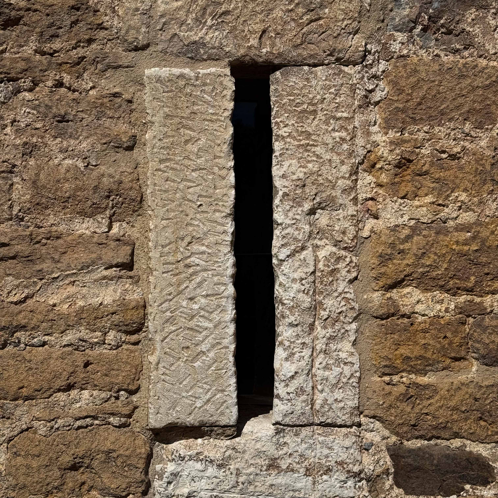
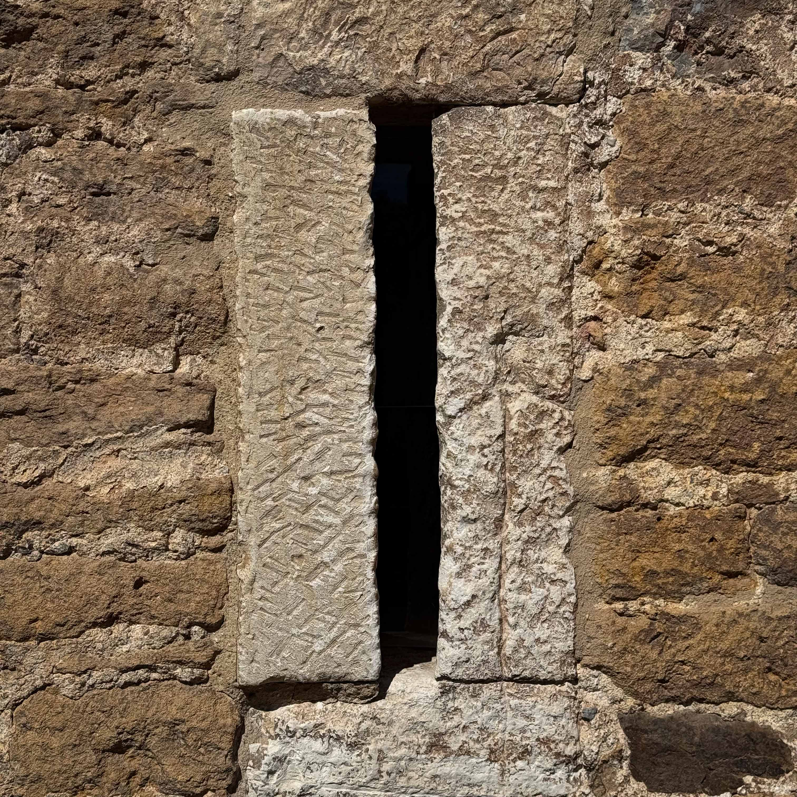

Vídeo del Monte Naranco que ofrece una vista panorámica de 360º desde el punto de grabación.
Vídeo del Monte Naranco con vista en 360º
Monte Naranco
 El Cristo y los
El Cristo y los
Monumentos Prerrománicos
¡Contempla! Oviedo desde la altura.
Los Monumetos Prerrománicos. El Sagrado Corazón.
Recorre las rutas entre historia y naturaleza.


 



Sobre Nosotros
Somos un equipo de desarrolladores web dedicados a crear experiencias únicas.
Nos
esforzamos por transformar la visita a los parques por excelencia de Oviedo en experiencias
digitales visualmente atractivas, intuitivas y fáciles de usar.
© Copyright 2024.
Todos los derechos reservados.